# {{<video https://youtu.be/playlist?list=PLQqh36zP38-xB7p8AzMKUrEfxL0Vte-pY&si=BwVUNxT8IIPrjIcA>}}06wk: 신경망 – 로지스틱의 한계와 극복

1. 강의영상
2. Imports
import torch
import matplotlib.pyplot as plt
import numpy as np
import pandas as pd
import plotly.graph_objects as goplt.rcParams['figure.figsize'] = (4.5,3.0)3. 로지스틱의 한계
A. 신문기사 (데이터의 모티브)
중소·지방 기업 “뽑아봤자 그만두니까”
중소기업 관계자들은 고스펙 지원자를 꺼리는 이유로 높은 퇴직률을 꼽는다. 여건이 좋은 대기업으로 이직하거나 회사를 관두는 경우가 많다는 하소연이다. 고용정보원이 지난 3일 공개한 자료에 따르면 중소기업 청년취업자 가운데 49.5%가 2년 내에 회사를 그만두는 것으로 나타났다.
중소 IT업체 관계자는 “기업 입장에서 가장 뼈아픈 게 신입사원이 그만둬서 새로 뽑는 일”이라며 “명문대 나온 스펙 좋은 지원자를 뽑아놔도 1년을 채우지 않고 그만두는 사원이 대부분이라 우리도 눈을 낮춰 사람을 뽑는다”고 말했다.
B. 박혜원씨의 관찰
df = pd.read_csv("https://raw.githubusercontent.com/guebin/DL2025/master/posts/ironyofspec.csv")
df| x | prob | y | |
|---|---|---|---|
| 0 | -1.000000 | 0.000045 | 0.0 |
| 1 | -0.998999 | 0.000046 | 0.0 |
| 2 | -0.997999 | 0.000047 | 0.0 |
| 3 | -0.996998 | 0.000047 | 0.0 |
| 4 | -0.995998 | 0.000048 | 0.0 |
| ... | ... | ... | ... |
| 1995 | 0.995998 | 0.505002 | 0.0 |
| 1996 | 0.996998 | 0.503752 | 0.0 |
| 1997 | 0.997999 | 0.502501 | 0.0 |
| 1998 | 0.998999 | 0.501251 | 1.0 |
| 1999 | 1.000000 | 0.500000 | 1.0 |
2000 rows × 3 columns
x = torch.tensor(df.x).float()
y = torch.tensor(df.y).float()
prob = torch.tensor(df.prob).float()C. True (박혜원씨는 이걸 모름)
plt.plot(x,y,'o',alpha=0.02)
plt.plot(x,prob,'--r')
D. 다시 박혜원씨의 세상으로
X = x.reshape(-1,1)
Y = y.reshape(-1,1)
torch.manual_seed(43052)
net = torch.nn.Sequential(
torch.nn.Linear(1,1),
torch.nn.Sigmoid()
)
loss_fn = torch.nn.BCELoss()
optimizer = torch.optim.Adam(net.parameters())
#---#
for epoch in range(5000):
## Step1. Yhat만들기
Yhat = net(X)
## Step2. loss계산
loss = loss_fn(Yhat,Y)
## Step3. 미분
loss.backward()
## Step4. 업데이트
optimizer.step()
optimizer.zero_grad()plt.plot(X,Y,'o',alpha=0.02)
plt.plot(X,prob,'--r') # 사실 X와 prob는 차원이 안맞는데 되게 고맙네..? matplotlib
plt.plot(X,net(X).data, '--')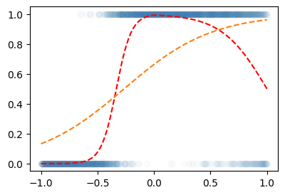
- 망했음.. epoch을 10억번 돌려도 이건 못맞출것 같은데?
E. 범인찾기
- 뭐가 문제지?
for epoch in range(5000):
## Step1. Yhat만들기
Yhat = net(X)
## Step2. loss계산
loss = loss_fn(Yhat,Y)
## Step3. 미분
loss.backward()
## Step4. 업데이트
optimizer.step()
optimizer.zero_grad()- 놀랍게도 Step1의 문제..
- sigmoid를 넣기 전의 상태가 직선이 아니라 꺽이는 직선이야 한다.
a = torch.nn.Sigmoid()fig,ax = plt.subplots(4,2,figsize=(8,8))
u1 = torch.tensor([-6,-4,-2,0,2,4,6])
u2 = torch.tensor([6,4,2,0,-2,-4,-6])
u3 = torch.tensor([-6,-2,2,6,2,-2,-6])
u4 = torch.tensor([-6,-2,2,6,4,2,0])
ax[0,0].plot(u1,'--o',color='C0',label = r"$u_1$")
ax[0,0].legend()
ax[0,1].plot(a(u1),'--o',color='C0',label = r"$a(u_1)=\frac{exp(u_1)}{exp(u_1)+1}$")
ax[0,1].legend()
ax[1,0].plot(u2,'--o',color='C1',label = r"$u_2$")
ax[1,0].legend()
ax[1,1].plot(a(u2),'--o',color='C1',label = r"$a(u_2)=\frac{exp(u_2)}{exp(u_2)+1}$")
ax[1,1].legend()
ax[2,0].plot(u3,'--o',color='C2', label = r"$u_3$")
ax[2,0].legend()
ax[2,1].plot(a(u3),'--o',color='C2', label = r"$a(u_3)=\frac{exp(u_3)}{exp(u_3)+1}$")
ax[2,1].legend()
ax[3,0].plot(u4,'--o',color='C3', label = r"$u_4$")
ax[3,0].legend()
ax[3,1].plot(a(u4),'--o',color='C3', label = r"$a(u_4)=\frac{exp(u_4)}{exp(u_4)+1}$")
ax[3,1].legend()
- 결국 아래의 네크워크 설계는 틀렸다.
net = torch.nn.Sequential(
torch.nn.Linear(1,1),
torch.nn.Sigmoid()
)왜?? 이 네트워크가 표현할 수 있는 형태결국
- 증가하는 S모양의 곡선
- 감소하는 S모양의 곡선
뿐인데 실제데이터는 1,2에 해당하지 않기 때문. 즉 net가 표현하는 표현력이 너무 약하다.
4. 꺽인직선을 만드는 방법
- 로지스틱의 한계를 극복하기 위해서는 시그모이드를 취하기 전에 꺽인 그래프 모양을 만드는 기술이 있어야겠음.
- 아래와 같은 벡터 \({\bf x}\)를 가정하자.
x = torch.linspace(-1,1,1001)- 목표: 아래와 같은 벡터 \({\bf y}\)를 만들어보자.
\[{\bf y} = [y_1,y_2,\dots,y_{n}]^\top, \quad y_i = \begin{cases} 9x_i +4.5& x_i <0 \\ -4.5x_i + 4.5& x_i >0 \end{cases}\]
# 방법1 – 수식 그대로 구현
plt.plot(x,9*x+4.5,color="blue",alpha=0.1)
plt.plot(x[x<0], (9*x+4.5)[x<0],color="blue")
plt.plot(x,-4.5*x+4.5,color="orange",alpha=0.1)
plt.plot(x[x>0], (-4.5*x+4.5)[x>0],color="orange")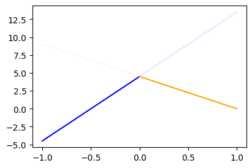
y = x*0
y[x<0] = (9*x+4.5)[x<0]
y[x>0] = (-4.5*x+4.5)[x>0]
plt.plot(x,y)
#
# 방법2 – 렐루이용
relu = torch.nn.ReLU()
#plt.plot(x,-4.5*relu(x),color="red")
#plt.plot(x,-9*relu(-x),color="blue")
y = -4.5*relu(x) + -9*relu(-x) + 4.5
plt.plot(x,y)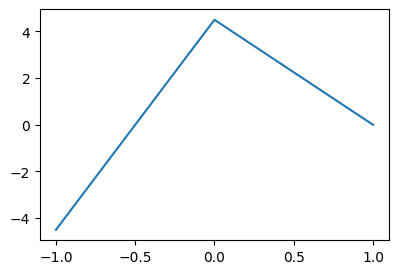
- 좀 더 중간과정을 시각화 – (강의때 설명안했음)
fig = plt.figure(figsize=(6, 4))
spec = fig.add_gridspec(4, 3)
ax1 = fig.add_subplot(spec[:2,0]); ax1.set_title(r'$x$'); ax1.set_ylim(-1,1)
ax2 = fig.add_subplot(spec[2:,0]); ax2.set_title(r'$-x$'); ax2.set_ylim(-1,1)
ax3 = fig.add_subplot(spec[:2,1]); ax3.set_title(r'$relu(x)$'); ax3.set_ylim(-1,1)
ax4 = fig.add_subplot(spec[2:,1]); ax4.set_title(r'$relu(-x)$'); ax4.set_ylim(-1,1)
ax5 = fig.add_subplot(spec[1:3,2]); ax5.set_title(r'$-4.5 relu(x)-9 relu(-x)+4.5$')
#---#
ax1.plot(x,'--',color='C0')
ax2.plot(-x,'--',color='C1')
ax3.plot(relu(x),'--',color='C0')
ax4.plot(relu(-x),'--',color='C1')
ax5.plot(-4.5*relu(x)-9*relu(-x)+4.5,'--',color='C2')
fig.tight_layout()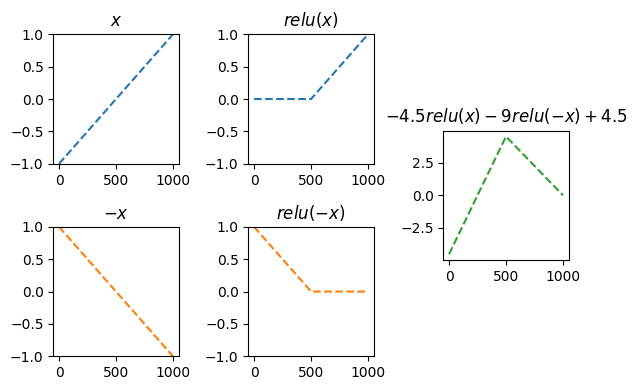
#
# 방법3 – relu의 브로드캐스팅 활용
- 우리가 하고 싶은 것
# y = -4.5*relu(x) + -9*relu(-x) + 4.5- 아래와 같은 아이디어로 y를 계산해도 된다.
- x, relu 준비
- u = [x -x]
- v = relu(u) = [relu(x), relu(-x)] = [v1 v2]
- y = -4.5*v1 + -9*v2 + 4.5
U = torch.stack([x,-x],axis=1)
V = relu(U)
V1 = V[:,[0]]
V2 = V[:,[1]]
Y = -4.5*V1 -9*V2 + 4.5
plt.plot(x,Y) # 차원 못맞췄는데.. 고마웡...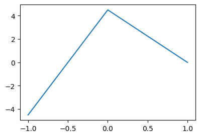
V1tensor([[0.0000],
[0.0000],
[0.0000],
...,
[0.9960],
[0.9980],
[1.0000]])#
# 방법4 – y = linr(v)
# 4. y = -4.5*v1 + -9*v2 + 4.5 = [v1 v2] @ [[-4.5],[-9]] + 4.5
# y = -4 + 3*x = [1 x] @ [[-4],[3]]U = torch.stack([x,-x],axis=1)
V = relu(U)
Y = V @ torch.tensor([[-4.5],[-9]]) + 4.5 plt.plot(X,Y)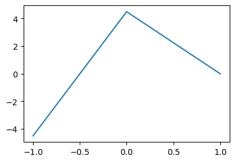
#
# 방법5 – u = linr(x)
# x
# u = torch.concat([x,-x],axis=1)
# v = relu(u)
# y = v @ torch.tensor([[-4.5],[-9]]) + 4.5 X = x.reshape(-1,1)
U = X @ torch.tensor([[1.0, -1.0]])
V = relu(U)
Y = V @ torch.tensor([[-4.5],[-9]]) + 4.5 plt.plot(X,Y)
#
# 방법6 – torch.nn.Linear()를 이용
# x
# u = x @ torch.tensor([[1.0, -1.0]]) = l1(x)
# v = relu(u) = a1(u)
# y = v @ torch.tensor([[-4.5],[-9]]) + 4.5 = l2(v) # u = l1(x) # l1은 x->u인 선형변환: (n,1) -> (n,2) 인 선형변환
l1 = torch.nn.Linear(1,2,bias=False)
l1.weight.data = torch.tensor([[1.0, -1.0]]).T
a1 = relu
l2 = torch.nn.Linear(2,1,bias=True)
l2.weight.data = torch.tensor([[-4.5],[-9]]).T
l2.bias.data = torch.tensor([4.5])
#---#
X
U = l1(X)
V = a1(U)
Y = l2(V) plt.plot(X,Y.data)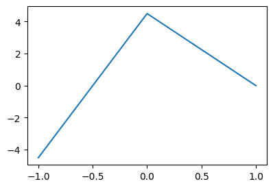
net = torch.nn.Sequential(l1,a1,l2)
plt.plot(X,net(X).data)
#
수식표현
(1) \({\bf X}=\begin{bmatrix} x_1 \\ \dots \\ x_n \end{bmatrix}\)
(2) \(l_1({\bf X})={\bf X}{\bf W}^{(1)}\overset{bc}{+} {\boldsymbol b}^{(1)}=\begin{bmatrix} x_1 & -x_1 \\ x_2 & -x_2 \\ \dots & \dots \\ x_n & -x_n\end{bmatrix}\)
- \({\bf W}^{(1)}=\begin{bmatrix} 1 & -1 \end{bmatrix}\)
- \({\boldsymbol b}^{(1)}=\begin{bmatrix} 0 & 0 \end{bmatrix}\)
(3) \((a_1\circ l_1)({\bf X})=\text{relu}\big({\bf X}{\bf W}^{(1)}\overset{bc}{+}{\boldsymbol b}^{(1)}\big)=\begin{bmatrix} \text{relu}(x_1) & \text{relu}(-x_1) \\ \text{relu}(x_2) & \text{relu}(-x_2) \\ \dots & \dots \\ \text{relu}(x_n) & \text{relu}(-x_n)\end{bmatrix}\)
(4) \((l_2 \circ a_1\circ l_1)({\bf X})=\text{relu}\big({\bf X}{\bf W}^{(1)}\overset{bc}{+}{\boldsymbol b}^{(1)}\big){\bf W}^{(2)}\overset{bc}{+}b^{(2)}\)
\(\quad=\begin{bmatrix} -4.5\times\text{relu}(x_1) -9.0 \times \text{relu}(-x_1) +4.5 \\ -4.5\times\text{relu}(x_2) -9.0 \times\text{relu}(-x_2) + 4.5 \\ \dots \\ -4.5\times \text{relu}(x_n) -9.0 \times\text{relu}(-x_n)+4.5 \end{bmatrix}\)
- \({\bf W}^{(2)}=\begin{bmatrix} -4.5 \\ -9 \end{bmatrix}\)
- \(b^{(2)}=4.5\)
(5) \(net({\bf X})=(l_2 \circ a_1\circ l_1)({\bf X})=\text{relu}\big({\bf X}{\bf W}^{(1)}\overset{bc}{+}{\boldsymbol b}^{(1)}\big){\bf W}^{(2)}\overset{bc}{+}b^{(2)}\)
\(\quad =\begin{bmatrix} -4.5\times\text{relu}(x_1) -9.0 \times \text{relu}(-x_1) +4.5 \\ -4.5\times\text{relu}(x_2) -9.0 \times\text{relu}(-x_2) + 4.5 \\ \dots \\ -4.5\times \text{relu}(x_n) -9.0 \times\text{relu}(-x_n)+4.5 \end{bmatrix}\)
5. 스펙의역설 적합
- 다시한번 데이터 정리
df = pd.read_csv("https://raw.githubusercontent.com/guebin/DL2025/main/posts/ironyofspec.csv")x = torch.tensor(df.x).float()
y = torch.tensor(df.y).float()
prob = torch.tensor(df.prob).float()plt.plot(x,y,'.',alpha=0.03)
plt.plot(x,prob,'--')
- Step1에 대한 생각: 네트워크를 어떻게 만들까? = 아키텍처를 어떻게 만들까? = 모델링
\[\underset{(n,1)}{\bf X} \overset{l_1}{\to} \underset{(n,2)}{\bf U^{(1)}} \overset{a_1}{\to} \underset{(n,2)}{\bf V^{(1)}} \overset{l_1}{\to} \underset{(n,1)}{\bf U^{(2)}} \overset{a_2}{\to} \underset{(n,1)}{\bf V^{(2)}}=\underset{(n,1)}{\hat{\bf Y}}\]
- \(l_1\):
torch.nn.Linear(1,2,bias=False) - \(a_1\):
torch.nn.ReLU() - \(l_2\):
torch.nn.Linear(2,1,bias=True) - \(a_2\):
torch.nn.Sigmoid()
- Step1-4
X = x.reshape(-1,1)
Y = y.reshape(-1,1)
torch.manual_seed(1)
net = torch.nn.Sequential(
torch.nn.Linear(1,2,bias=False),
torch.nn.ReLU(),
torch.nn.Linear(2,1,bias=True),
torch.nn.Sigmoid()
)
loss_fn = torch.nn.BCELoss()
optimizer = torch.optim.Adam(net.parameters())for epoch in range(5000):
## step1
Yhat = net(X)
## step2
loss = loss_fn(Yhat,Y)
## step3
loss.backward()
## step4
optimizer.step()
optimizer.zero_grad()plt.plot(X,Y,'.',alpha=0.03)
plt.plot(X,prob,'--')
plt.plot(X,net(X).data,'--')
한번더~
for epoc in range(5000):
## step1
Yhat = net(X)
## step2
loss = loss_fn(Yhat,Y)
## step3
loss.backward()
## step4
optimizer.step()
optimizer.zero_grad()plt.plot(X,Y,'.',alpha=0.03)
plt.plot(X,prob,'--')
plt.plot(X,net(X).data,'--')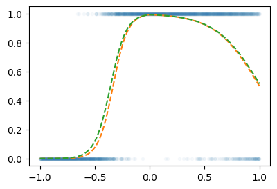
6. 꺽인그래프의 한계?
- 걱정: 지난시간에 배운 기술은 sig를 취하기 전이 꺽은선인 형태만 가능할 듯 하다. 그래서 이 역시 표현력이 부족할 듯 하다.
- 그런데 생각보다 표현력이 풍부한 편이다. 즉 생각보다 쓸 만하다. 왜??
X = torch.linspace(-1,1,1001).reshape(-1,1)
torch.manual_seed(42)
net = torch.nn.Sequential(
torch.nn.Linear(1,3,bias=True),
torch.nn.ReLU(),
torch.nn.Linear(3,1,bias=True),
)
plt.plot(X,net(X).data)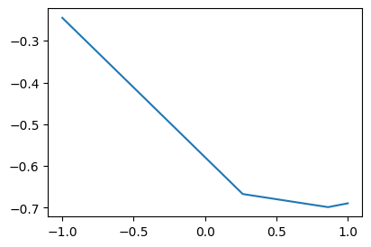
A. Step은 표현 불가능하지 않나?
# 예제1 – 일부러 이상하게 만든 취업합격률 곡선
torch.manual_seed(43052)
X = torch.linspace(-1,1,2000).reshape(-1,1)
U = 0*X-3
U[X<-0.2] = (15*X+6)[X<-0.2]
U[(-0.2<X)&(X<0.4)] = (0*X-1)[(-0.2<X)&(X<0.4)]
sig = torch.nn.Sigmoid()
V = Prob = sig(U)
Y = torch.bernoulli(V)plt.plot(X,Y,'.',alpha=0.03)
plt.plot(X,Prob,'--r')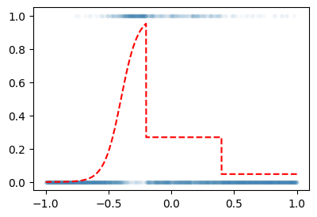
net = torch.nn.Sequential(
torch.nn.Linear(1,512),
torch.nn.ReLU(),
torch.nn.Linear(512,1),
torch.nn.Sigmoid()
)
loss_fn = torch.nn.BCELoss()
optimizer = torch.optim.Adam(net.parameters())
#---#
for epoc in range(5000):
## 1
Yhat = net(X)
## 2
loss = loss_fn(Yhat,Y)
## 3
loss.backward()
## 4
optimizer.step()
optimizer.zero_grad()plt.plot(X,Y,'.',alpha=0.03)
plt.plot(X,Prob,'--r')
plt.plot(X,net(X).data,'--')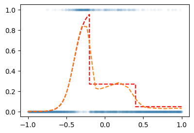
#
B. 곡선은 표현 불가능하지 않나?
# 예제2 – 2024년 수능 미적30번 문제에 나온 곡선
\[y_i = e^{-x_i} \times |\cos(5x_i)| \times \sin(5x) + \epsilon_i, \quad \epsilon_i \sim N(0,\sigma^2)\]
torch.manual_seed(43052)
X = torch.linspace(0,2,2000).reshape(-1,1)
Eps = torch.randn(2000).reshape(-1,1)*0.05
Fx = torch.exp(-1*X)* torch.abs(torch.cos(3*X))*(torch.sin(3*X))
Y = Fx + Epsplt.plot(X,Y,alpha=0.5)
plt.plot(X,Fx,'--r')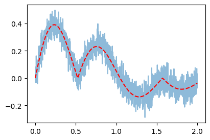
net = torch.nn.Sequential(
torch.nn.Linear(1,2048), # 꺽이지않은 1024개의 직선
torch.nn.ReLU(), # 꺽인(렐루된) 1024개의 직선
torch.nn.Linear(2048,1), # 합쳐진 하나의 꺽인 직선
)
loss_fn = torch.nn.MSELoss()
optimizr = torch.optim.Adam(net.parameters())
##
for epoc in range(1000):
## 1
Yhat = net(X)
## 2
loss = loss_fn(Yhat,Y)
## 3
loss.backward()
## 4
optimizr.step()
optimizr.zero_grad()plt.plot(X,Y,alpha=0.5)
plt.plot(X,Fx,'--r')
plt.plot(X,net(X).data,'--')
plt.legend()/tmp/ipykernel_2973638/3527974153.py:4: UserWarning: No artists with labels found to put in legend. Note that artists whose label start with an underscore are ignored when legend() is called with no argument.
plt.legend()
#
7. 시벤코정리
A. 시벤코정리 소개
Universal Approximation Thm (Cybenko 1989)
하나의 은닉층을 가지는 아래와 같은 꼴의 네트워크 \(net: {\bf X}_{n \times p} \to {\bf y}_{n\times q}\)는
net = torch.nn.Sequential(
torch.nn.Linear(p,???),
torch.nn.Sigmoid(),
torch.nn.Linear(???,q)
)모든 보렐 가측함수 (Borel measurable function)
\[f: {\bf X}_{n \times p} \to {\bf y}_{n\times q}\]
를 원하는 정확도로 “근사”시킬 수 있다. 쉽게 말하면 \({\bf X} \to {\bf y}\) 인 어떠한 복잡한 규칙라도 하나의 은닉층을 가진 신경망이 원하는 정확도로 근사시킨다는 의미이다. 예를들면 아래와 같은 문제를 해결할 수 있다.
- \({\bf X}_{n\times 2}\)는 토익점수, GPA 이고 \({\bf y}_{n\times 1}\)는 취업여부일 경우 \({\bf X} \to {\bf y}\)인 규칙을 신경망은 항상 찾을 수 있다.
- \({\bf X}_{n \times p}\)는 주택이미지, 지역정보, 주택면적, 주택에 대한 설명 이고 \({\bf y}_{n\times 1}\)는 주택가격일 경우 \({\bf X} \to {\bf y}\)인 규칙을 신경망은 항상 찾을 수 있다.
즉 하나의 은닉층을 가진 신경망의 표현력은 거의 무한대라 볼 수 있다.
Cybenko, George. 1989. “Approximation by Superpositions of a Sigmoidal Function.” Mathematics of Control, Signals and Systems 2 (4): 303–14.
보렐가측함수에 대한 정의는 측도론에 대한 이해가 있어야 가능함. 측도론에 대한 내용이 궁금하다면 https://guebin.github.io/SS2024/ 을 공부해보세요
B. 왜 가능한가??
- 준비
x = torch.linspace(-10,10,200).reshape(-1,1)
net = torch.nn.Sequential(
torch.nn.Linear(in_features=1,out_features=2),
torch.nn.Sigmoid(),
torch.nn.Linear(in_features=2,out_features=1)
)
l1,a1,l2 = netnetSequential(
(0): Linear(in_features=1, out_features=2, bias=True)
(1): Sigmoid()
(2): Linear(in_features=2, out_features=1, bias=True)
)# 생각1 – 2개의 시그모이드를 우연히 잘 조합하면 하나의 계단함수를 만들 수 있다.
l1.weight.data = torch.tensor([[-5.00],[5.00]])
l1.bias.data = torch.tensor([+10.00,+10.00])l2.weight.data = torch.tensor([[1.00,1.00]])
l2.bias.data = torch.tensor([-1.00])fig,ax = plt.subplots(1,3,figsize=(9,3))
ax[0].plot(x,l1(x)[:,[0]].data,label=r"$-5x+10$")
ax[0].plot(x,l1(x)[:,[1]].data,label=r"$5x+10$")
ax[0].set_title('$l_1(x)$')
ax[0].legend()
ax[1].plot(x,a1(l1(x))[:,[0]].data,label=r"$v_1=sig(-5x+10)$")
ax[1].plot(x,a1(l1(x))[:,[1]].data,label=r"$v_2=sig(5x+10)$")
ax[1].set_title('$(a_1 \circ l_1)(x)$')
ax[1].legend()
ax[2].plot(x,l2(a1(l1(x))).data,color='C2',label=r"$v_1+v_2-1$")
ax[2].set_title('$(l_2 \circ a_1 \circ \l_1)(x)$')
ax[2].legend()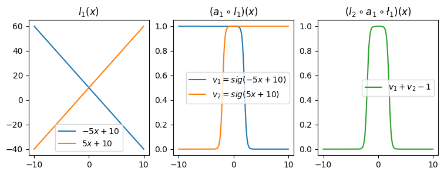
#
# 생각2 – 계단함수의 모양이 꼭 생각1과 같을 필요는 없다. 중심은 이동가능하고, 높이도 조절가능하다.
가능한 예시1
l1.weight.data = torch.tensor([[-5.00],[5.00]])
l1.bias.data = torch.tensor([+0.00,+20.00])
l2.weight.data = torch.tensor([[1.00,1.00]])
l2.bias.data = torch.tensor([-1.00])
fig,ax = plt.subplots(1,3,figsize=(9,3))
ax[0].plot(x,l1(x).data.numpy(),'--',color='C0'); ax[0].set_title('$l_1(x)$')
ax[1].plot(x,a1(l1(x)).data.numpy(),'--',color='C0'); ax[1].set_title('$(a_1 \circ l_1)(x)$')
ax[2].plot(x,l2(a1(l1(x))).data,'--',color='C0'); ax[2].set_title('$(l_2 \circ a_1 \circ \l_1)(x)$');
ax[2].set_ylim(-0.1,2.6)
가능한 예시2
l1.weight.data = torch.tensor([[-5.00],[5.00]])
l1.bias.data = torch.tensor([+20.00,+00.00])
l2.weight.data = torch.tensor([[2.50,2.50]])
l2.bias.data = torch.tensor([-2.50])
fig,ax = plt.subplots(1,3,figsize=(9,3))
ax[0].plot(x,l1(x).data.numpy(),'--',color='C1'); ax[0].set_title('$l_1(x)$')
ax[1].plot(x,a1(l1(x)).data.numpy(),'--',color='C1'); ax[1].set_title('$(a_1 \circ l_1)(x)$')
ax[2].plot(x,l2(a1(l1(x))).data,'--',color='C1'); ax[2].set_title('$(l_2 \circ a_1 \circ \l_1)(x)$');
ax[2].set_ylim(-0.1,2.6)
#
# 생각3: 첫번째 선형변환(=\(l_1\))에서 out_features=4로 하고 적당한 가중치를 조정하면 \((l_2\circ a_1 \circ l_1)(x)\)의 결과로 생각2의 예시1,2를 조합한 형태도 가능할 것 같다. 즉 4개의 시그모이드를 잘 조합하면 2단계 계단함수를 만들 수 있다.
l1 = torch.nn.Linear(in_features=1,out_features=4)
a1 = torch.nn.Sigmoid()
l2 = torch.nn.Linear(in_features=4,out_features=1)l1.weight.data = torch.tensor([[-5.00],[5.00],[-5.00],[5.00]])
l1.bias.data = torch.tensor([0.00, 20.00, 20.00, 0])
l2.weight.data = torch.tensor([[1.00, 1.00, 2.50, 2.50]])
l2.bias.data = torch.tensor([-1.0-2.5])plt.plot(l2(a1(l1(x))).data,'--')
plt.title(r"$(l_2 \circ a_1 \circ l_1)(x)$")Text(0.5, 1.0, '$(l_2 \\circ a_1 \\circ l_1)(x)$')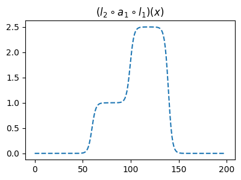
이러한 함수는 계단모양이며, 0을 제외한 서로다른 계단의 높이는 2개가 된다. 이를 간단히 “2단계-계단함수”라고 칭하자.
#
# 생각4 – \(2m\)개의 시그모이드를 우연히 잘 조합하면 \(m\)단계 계단함수를 만들 수 있다.
- 정리1: 2개의 시그모이드를 우연히 잘 결합하면 아래와 같은 “1단계-계단함수” 함수 \(h\)를 만들 수 있다.
def h(x):
sig = torch.nn.Sigmoid()
v1 = -sig(200*(x-0.5))
v2 = sig(200*(x+0.5))
return v1+v2 plt.plot(x,h(x))
plt.title("$h(x)$")Text(0.5, 1.0, '$h(x)$')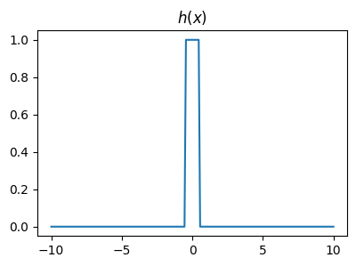
- 정리2: 위와 같은 함수 \(h\)를 이용한 아래의 네트워크를 고려하자. 이는 “m단계-계단함수”를 만든다.
\[\underset{(n,1)}{\bf X} \overset{l_1}{\to} \underset{(n,m)}{\boldsymbol u^{(1)}} \overset{h}{\to} \underset{(n,m)}{\boldsymbol v^{(1)}} \overset{l_2}{\to} \underset{(n,1)}{\hat{\boldsymbol y}}\]
그리고 위의 네트워크와 동일한 효과를 주는 아래의 네트워크가 항상 존재함.
\[\underset{(n,1)}{\bf X} \overset{l_1}{\to} \underset{(n,2m)}{\boldsymbol u^{(1)}} \overset{sig}{\to} \underset{(n,2m)}{\boldsymbol v^{(1)}} \overset{l_2}{\to} \underset{(n,1)}{\hat{\boldsymbol y}}\]
#
# 생각5 – 그런데 어지간한 함수형태는 구불구불한 “m단계-계단함수”로 다 근사할 수 있지 않나?
그렇다면 아래의 네트워크에서 (1) ?? 를 충분히 키우고 (2) 적절하게 학습만 잘 된다면
net = torch.nn.Sequential(
torch.nn.Linear(p,???),
torch.nn.Sigmoid(),
torch.nn.Linear(???,q)
)위의 네트워크는 거의 무한한 표현력을 가진다. –> 이런식으로 증명하면 됩니당
#
C. \(h\)의 위력
- 소망: 아래와 같이 net을 설계해서, 그 위력을 체감해보고 싶은데..
net = torch.nn.Sequential(
torch.nn.Linear(1,??),
torch.nn.H(),
torch.nn.Linear(??,1)
)- \(h(x)\)를 생성하는 클래스를 만들어보자.
class H(torch.nn.Module):
def __init__(self):
super().__init__()
def forward(self,x):
def h(x):
sig = torch.nn.Sigmoid()
v1 = -sig(200*(x-0.5))
v2 = sig(200*(x+0.5))
return v1+v2
out = h(x)
return out h = H()- \(h\)의 위력을 체감해보자.
# 예제1 – 스펙의 역설
df = pd.read_csv("https://raw.githubusercontent.com/guebin/DL2025/main/posts/ironyofspec.csv")
x = torch.tensor(df.x).float().reshape(-1,1)
y = torch.tensor(df.y).float().reshape(-1,1)
prob = torch.tensor(df.prob).float().reshape(-1,1)net = torch.nn.Sequential(
torch.nn.Linear(1,2048),
H(),
torch.nn.Linear(2048,1),
torch.nn.Sigmoid()
)
loss_fn = torch.nn.BCELoss()
optimizr = torch.optim.Adam(net.parameters())
#---#
for epoc in range(200):
## 1
yhat = net(x)
## 2
loss = loss_fn(yhat,y)
## 3
loss.backward()
## 4
optimizr.step()
optimizr.zero_grad()plt.plot(x,prob)
plt.plot(x,net(x).data,'--')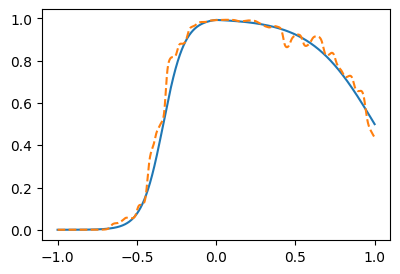
#
# 예제2 – 수능곡선
torch.manual_seed(43052)
x = torch.linspace(0,2,2000).reshape(-1,1)
eps = torch.randn(2000).reshape(-1,1)*0.05
fx = torch.exp(-1*x)* torch.abs(torch.cos(3*x))*(torch.sin(3*x))
y = fx + epsplt.plot(x,y,alpha=0.5)
plt.plot(x,fx)
net = torch.nn.Sequential(
torch.nn.Linear(1,2048),
H(),
torch.nn.Linear(2048,1)
)
loss_fn = torch.nn.MSELoss()
optimizr = torch.optim.Adam(net.parameters())
#---#
for epoc in range(200):
## 1
yhat = net(x)
## 2
loss = loss_fn(yhat,y)
## 3
loss.backward()
## 4
optimizr.step()
optimizr.zero_grad()plt.plot(x,y,alpha=0.5)
plt.plot(x,fx)
plt.plot(x,net(x).data,'--')
#
D. 의문점
- 이 수업을 잘 이해한 사람: 그냥 활성화함수를 \(h\)로 쓰면 끝 아니야? 뭐하러 relu 를 쓰는거지?
- 딥러닝을 좀 공부해본사람1: 왜 딥러닝이 2010년이 지나서야 떳지? 1989년에 세상의 모든 문제가 풀려야 하는것 아닌가?
- 딥러닝을 좀 공부해본사람2: 하나의 은닉층을 가진 네크워크는 잘 안쓰지 않나? 은닉층이 깊을수록 좋다고 들었는데?
- 약간의 의구심이 있지만 아무튼 우리는 아래의 무기를 가진 꼴이 되었다.
우리의 무기
하나의 은닉층을 가지는 아래와 같은 꼴의 네트워크로,
net = torch.nn.Sequential(
torch.nn.Linear(p,???),
torch.nn.Sigmoid(),
torch.nn.Linear(???,q)
)\(f: {\bf X}_{n \times p} \to {\bf y}_{n\times q}\) 인 모든 보렐 가측 함수 \(f\) 을 원하는 정확도로 “근사”시킬 수 있다.